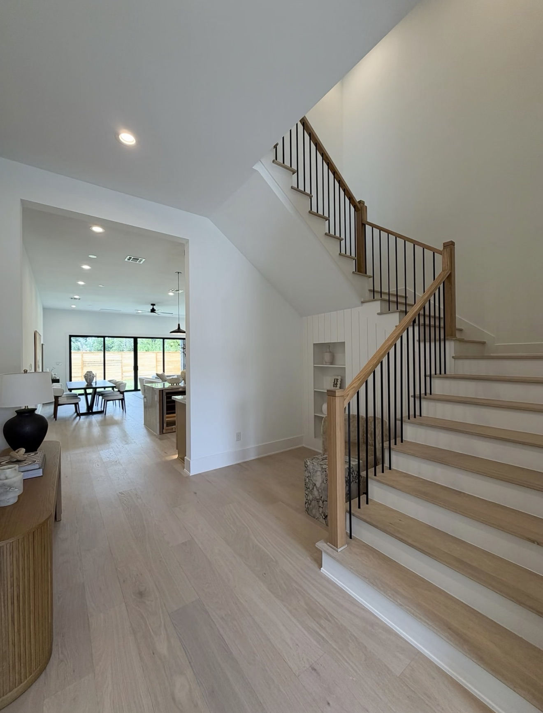
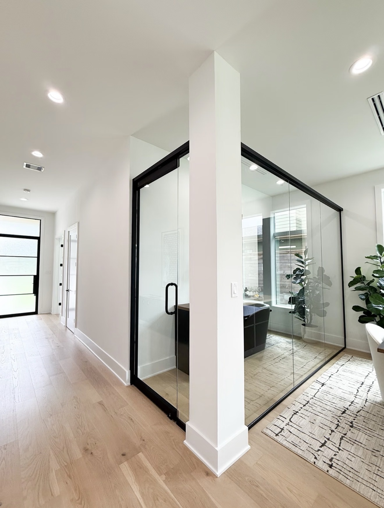
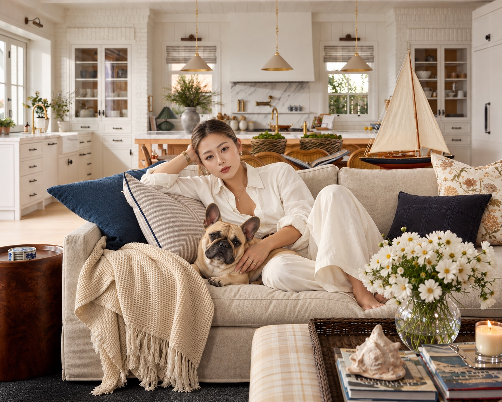
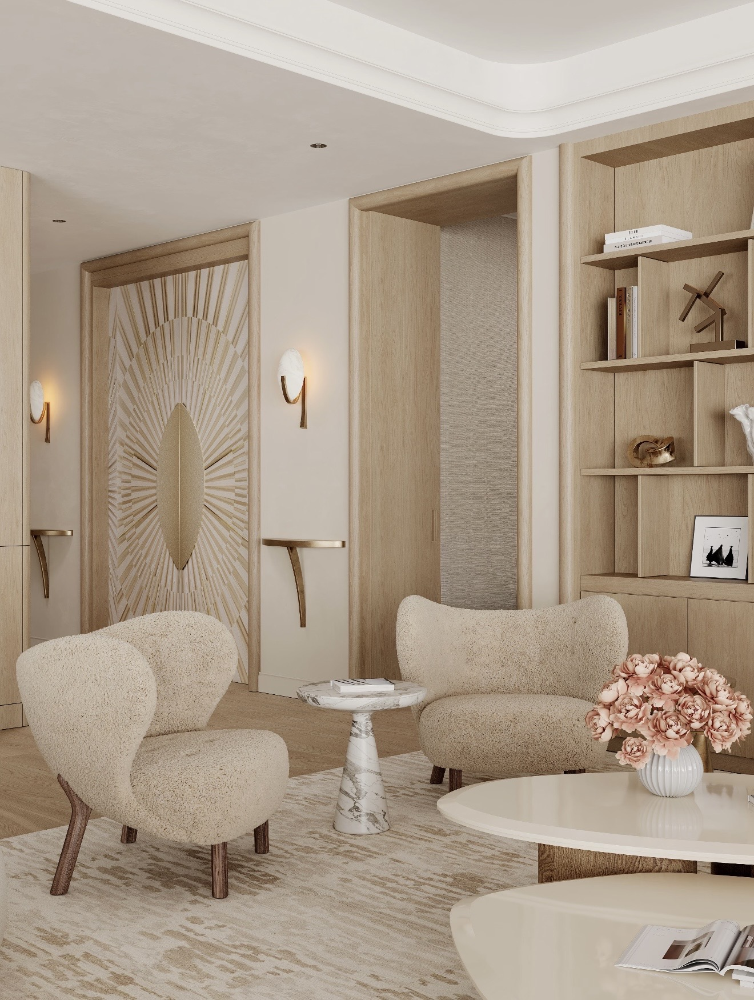
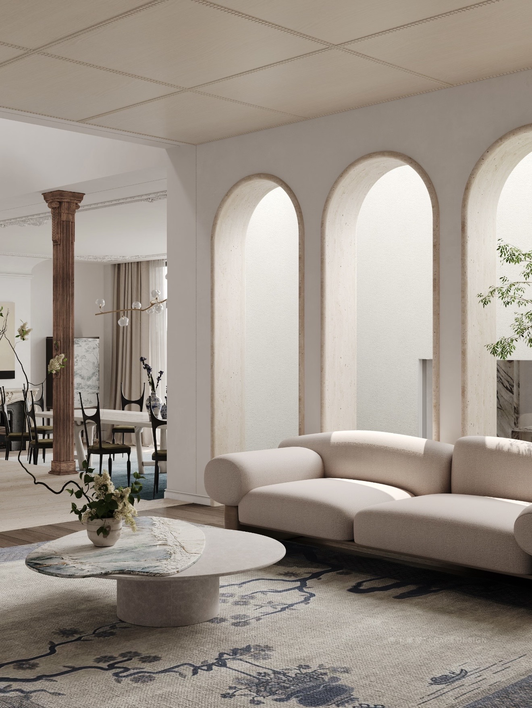
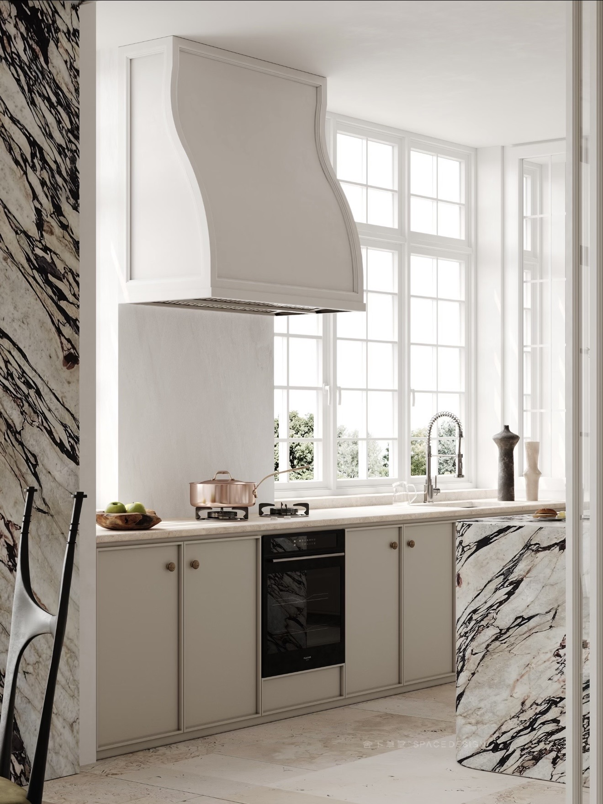
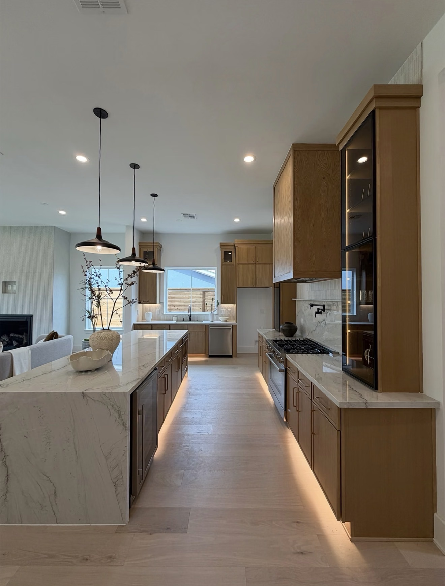

Design with purpose.Space with intention.
Full-service interior architecture & design · Greater Cincinnati & NYC


We don’t just make homes beautiful. We make them work harder.
Great design isn’t only how a room looks. It’s how it feels at seven in the morning and how it works at seven at night. As a full-service interior architecture and design studio, we start with the plan: we rethink layouts, open up flow, build in storage with a purpose, and find the square footage hiding in plain sight. Then we make it beautiful.
Better use of space
A reworked floor plan, storage where you actually need it, and every square foot earning its place, so the house finally fits the way you live.
Better design
Stone, wood, plaster, light, and fabric chosen together as one idea, so every room feels calm, personal, and unmistakably yours.
Greater property value
Decisions made for the long term, so the work improves your life now and adds to what your home is worth later.
Your home sets the tone for your day.
Picture the first ten minutes of your morning. A shower you can’t stand. Tile that dates the room. Light that never feels right. It seems small, until it’s every single day. Your home should do the opposite: meet you with calm, order, and a little lift before the day begins.
FOR NEW HOMEOWNERS
You bought the right house. It just doesn’t feel right yet.
The street is right. The school is right. But the layout fights you, storage is an afterthought, and the finishes have no character. Your time is limited, and you don’t want to spend it living in a house that feels disorganized while you figure out what to do.
We redesign the house around the way you live, then handle everything from drawings to the final install. You come home to rooms that run smoothly, look remarkable, and finally feel like yours.
FOR SELLERS
You’re getting ready to sell and want the strongest price.
Before you spend a dollar on renovation, know which updates buyers actually pay for. We walk the house with you, advise on layout, finishes, and presentation, and put your budget where it does the most for your sale price.
The result is a home that shows beautifully, photographs well, and stands apart from every listing around it.
Seven steps, no surprises
Every project follows the same signature process. You’ll always know what happens next and what we need from you. The heavy lifting is ours.
SEE THE FULL PROCESS- I.Consultation with Constance
- II.Trade day
- III.Concept & budget review
- IV.The presentation
- V.Ordering & installations
- VI.Reveal day
- VII.Project closure
As seen in

Meet Constance
Interior architect and designer. New York born, based in Greater Cincinnati, with an office in NYC.
Constance Kent has lived in New York, Seattle, Los Angeles, Nashville, and Tokyo. Each city changed how she understands space, proportion, material, comfort, restraint, and beauty, and all of it comes home to Cincinnati. As an interior architect, she works from the plan out, considering structure, systems, and local building code, so every idea is as buildable as it is beautiful.
Her clients rarely arrive with a finished vision. They bring a photograph, a material, a feeling in three words. She listens, finds the idea underneath, and turns those fragments into a home they recognize as theirs the moment they walk in.
MEET THE STUDIOWhat makes the studio different
For busy professionals who want an exceptional home, without design becoming a second job.
We see what others overlook
A dark hallway, a wasted corner, a kitchen that could open up. We find the square footage and the potential hiding in plain sight, and put it to work.
Interior architecture, not decoration
We work from the architecture out: floor plans, walls, built-ins, lighting, and ceilings, with an eye on structure and local code, so every design is beautiful and buildable.
White-glove, start to finish
Design, sourcing, contractor coordination, ordering, and installation, all handled for you. You make a few clear decisions. We carry the rest.
Designed for how you feel
Sensory-aware, neuro-inclusive design: light, sound, texture, color, and clutter-free storage planned to help you focus, rest, and feel at ease in your own home.
Every decision adds value
Distinctive, never eccentric. Each choice is weighed against how it improves daily life now and how the home will read to a future buyer.
Condos to estates
Condominiums, single-family homes, estates, and luxury residences across Greater Cincinnati, from Louisville to Columbus, and in NYC.
Kind words from our clients
A glimpse at selected work
Condos, family homes, and estates, each designed around how it looks, how it works, and what it will be worth.
VIEW COMPLETE PORTFOLIOYou bring the fragments.I’ll find the vision.
Constance Kent
Interior architect. New York born, based in Greater Cincinnati, with an office in NYC.
I believe good design requires life density.
Taste doesn’t develop from scrolling through beautiful rooms. It comes from living. From experiencing different cities, cultures, architecture, people, hospitality, art, food, fashion, and ways of life, and allowing those experiences to change the way you see the world.
I’ve lived in New York, Seattle, Los Angeles, Nashville, and Tokyo. Every place has contributed something to the way I understand space, proportion, material, comfort, restraint, and beauty.
Every place has contributed something.
- New York
- Seattle
- Los Angeles
- Nashville
- Tokyo
- Cincinnati
Understanding the essay before the first paragraph.
Most of my clients don’t come to me with a perfectly articulated vision. They might show me one photograph. Point to a material. Describe a feeling in three words.
My job is to understand the essay they’re trying to write before they’ve figured out how to write the first paragraph.
Listen
One photograph, one material, three words. The fragments are where every project begins.
Interpret
I find the idea underneath the fragments and give it shape, proportion, and a palette.
Intensify
A complete environment, often something you couldn’t have described, but immediately recognize as yours.
I am not a yes designer.
If you hire me, you’re not hiring someone to agree with every decision you make. You’re hiring me for judgment.
If I believe something is wrong for the space, I’ll tell you. If there is a better solution, I’ll show you. And I’ll explain why.
You will always have the final decision. But I won’t quietly execute a choice that I believe compromises the design simply because it’s easier to say yes. That’s part of what you’re paying me for.

You make fewer decisions.I make them better.
Many of my clients are accomplished, demanding, and exceptionally busy. They don’t want interior design to become another job.
They don’t want 47 nearly identical tile samples and three weeks of emails about cabinet hardware. They want someone who understands what they’re trying to accomplish, filters out the noise, presents the right options, makes strong recommendations, and moves the project forward.
Interior design should not consume your life. It should quietly transform the way you live it.

Beauty with discipline.
A home is personal, but it is also an asset. I design with both realities in mind.
Individuality matters. Character matters. Unexpected choices matter. But good design requires restraint.
I consider proportion, permanence, architectural context, material longevity, whether every square foot is earning its place, and how today’s decisions affect what the property is worth tomorrow.
There is a difference between distinctive and eccentric. My work lives on the distinctive side of that line.
Kind words from our clients
I’m not the designer for everyone.
And I don’t intend to be.
If you’re looking for someone to simply execute a Pinterest board, we probably aren’t the right fit. If you want every idea validated regardless of whether it works, I’m probably not your designer.
But if you value strong judgment, cultural perspective, decisive execution, thoughtful disagreement, and a designer who can understand what you’re trying to say before you’ve completely figured out how to say it, we’ll probably understand each other very quickly.
Better use of space.Better design. Greater value.
Full-service interior architecture & design for condos, single-family homes, and estates
Whether you’ve just moved in, are planning a renovation, or are preparing to sell, we bring one cohesive, full-service approach, from the first floor plan to the final pillow.
We work with homeowners, investors, and developers, and every decision has a purpose: use space better, improve everyday living, elevate the experience of the property, and enhance its long-term value.
What we do
Space planning & reconfiguration
New floor plans that improve flow, open up light, and maximize usable square footage, so rooms feel larger and work harder.
Interior architecture
Kitchens, bathrooms, built-in storage, millwork, lighting, and ceilings, detailed with structure and local code in mind and coordinated with your contractor.
Materials, finishes & furnishings
Materials, finishes, fixtures, furniture, and art, much of it from trade-only sources, brought together into one cohesive design.
Sensory-aware design
Neuro-inclusive planning for light, acoustics, texture, and color, with calm, clutter-free storage, for homes that feel as good as they look.
Pre-sale renovation consulting
For homeowners getting ready to sell: a clear plan for the updates, finishes, and presentation that help your home sell for the strongest possible price.
White-glove implementation
We manage ordering, deliveries, trades, and installation, and keep you updated along the way, so you can stay focused on your life and work.
Signature process
Every Studio 2Kiwi project follows the same seven steps. You always know where we are, what we need from you, and what comes next, so the project moves forward without taking over your life.
- I.
Consultation with Constance
A paid, in-depth conversation with Constance, in person or by video. Bring one photograph, a material, or three words. We discuss goals, scope, and any architectural or code constraints and you’ll receive a tailored fee proposal afterward.
- II.
Trade day
Once you sign on, we meet at your home with the contractor and key trades to walk the full scope, measure, and document existing conditions before design begins.
- III.
Concept & budget review
I present the design direction, space plans, and preliminary budget. This is where we agree on the idea before any selections or construction drawings are made.
- IV.
The presentation
The complete design, in one sitting: drawings, millwork and ceiling details, elevations, lighting, and physical samples of every material and fabric. Fewer options, stronger recommendations, and the reasoning behind each.
- V.
Ordering & installations
The studio places every order, tracks delivery, and coordinates installation. I work with your contractor and trades so the design is built as drawn, and you get regular, concise updates.
- VI.
Reveal day
Furniture is placed, art is hung, and every room is styled. You walk into a finished home.
- VII.
Project closure & deficiencies
We walk the completed space together, resolve every outstanding item, and hand you a project book with specifications, sources, and care instructions for the years ahead.
Our core values

Design with purpose
Every choice has a reason: better flow, smarter storage, more light, lasting value. If it doesn’t make the home work better or feel better, it doesn’t make the cut.
Honest and decisive
You get a clear point of view, stated plainly and explained. We keep to deadlines and budgets, answer promptly, and never bury you in options. It’s your home. You should feel heard, and you should get a straight answer.

Space with intention
We plan how each room is used, felt, and moved through, from the first coffee of the morning to the last light at night, so your home supports the life you actually lead.
Trade-only sourcing
The studio works primarily with trade-only furniture, fabric, lighting, and stone sources, along with craftspeople who value quality and solve problems. That access makes custom, one-of-a-kind solutions possible.
Imagine a home that works as beautifully as it looks.
Architectural finishes, color, lighting, and personal details are developed around what you’re trying to say. You’ll see full plans, elevations, and ceiling details alongside curated fabric and material selections, all presented together with drawings and tactile samples, so you can hold your future home in your hands before a single order is placed.
Portfolio
Selected residential work
- LOCATION
- SCOPE
- CREDITS
Tell me aboutyour project.
Let’s begin with a conversation.
Just moved in, planning a renovation, or getting ready to sell? Share a little about your home and what you’re hoping for. One photograph or three words is a perfectly good place to start. The studio replies to every inquiry within two business days.